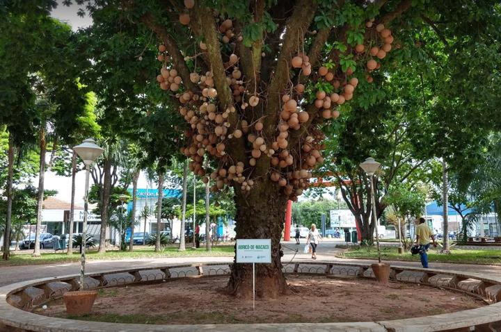

Um Pouco da Historia
Votuporanga é um município localizado no interior do estado de São Paulo. A cidade foi fundada em 8 de agosto de 1937 e seu nome tem origem indígena, sendo associado à ideia de “bons ventos”. Ao longo dos anos, Votuporanga cresceu e se tornou um importante centro comercial e de serviços da região.
Pontos Turisticos
Entre os lugares que podem ser visitados em Votuporanga estão o Parque da Cultura, espaço utilizado para eventos, lazer e atividades culturais, e a Praça São Bento, uma das áreas tradicionais da cidade. Também se destacam espaços públicos e áreas verdes utilizados pelos moradores para caminhadas e momentos de lazer.


Curiosidades
Uma das principais características de Votuporanga é a realização de eventos culturais e tradicionais que atraem moradores e visitantes de outras cidades. O município também possui forte atividade comercial e industrial, contribuindo para a economia da região.